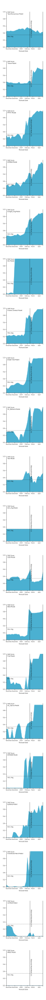

When is flu season likely to peak in the United States?
When is flu season likely to peak in the United States?Highest-scoring peak week forecasts
Additional forecasts
The charts below show forecast skill scores for each model submitted to the CDC FluSight Challenge, focusing only on forecasts of U.S. peak week. Forecast skill is based on both accuracy (log scores) and confidence (distributional sharpness) over the entire season. It varies as modeling teams update their forecasts each week.

The charts below show forecast skill scores for each model submitted to the CDC FluSight Challenge, focusing only on forecasts of U.S. peak week. Forecast skill is based on both accuracy (log scores) and confidence (distributional sharpness) over the entire season. It varies as modeling teams update their forecasts each week.
